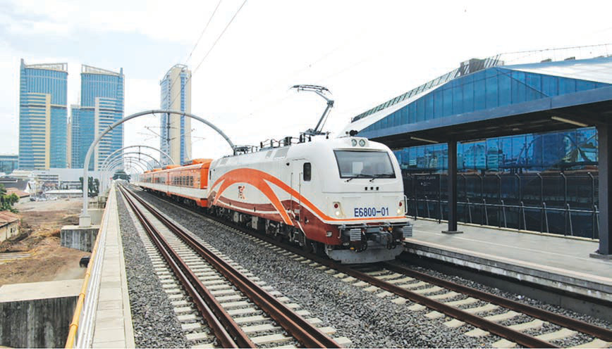

Kwa ujumla, rasilimali asilia za Tanzania zinatoa msingi mkubwa wa maendeleo ya sekta za kiuchumi na kuboresha maisha ya watu. Usimamizi mzuri na uwekezaji wa kimkakati katika rasilimali hizi ni muhimu ili kufikia maendeleo ya kiuchumi nchini.